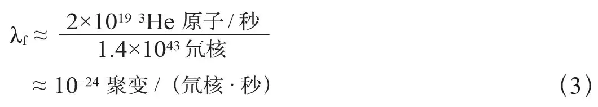
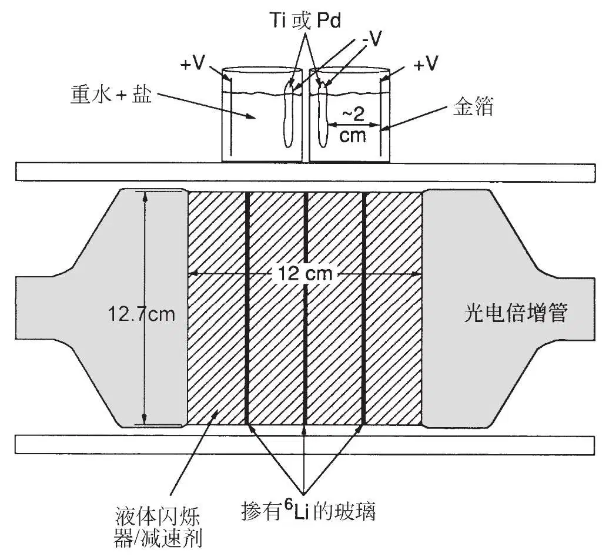
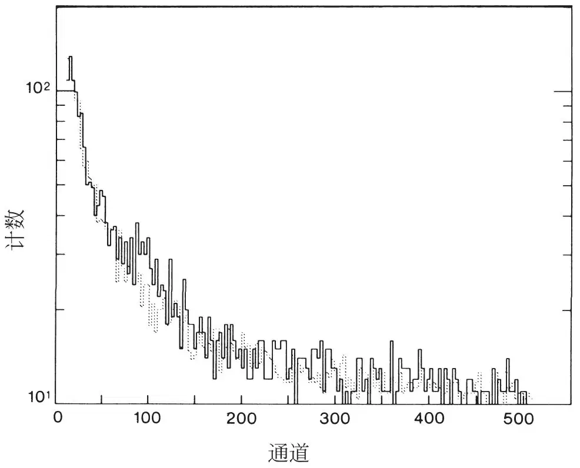
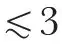
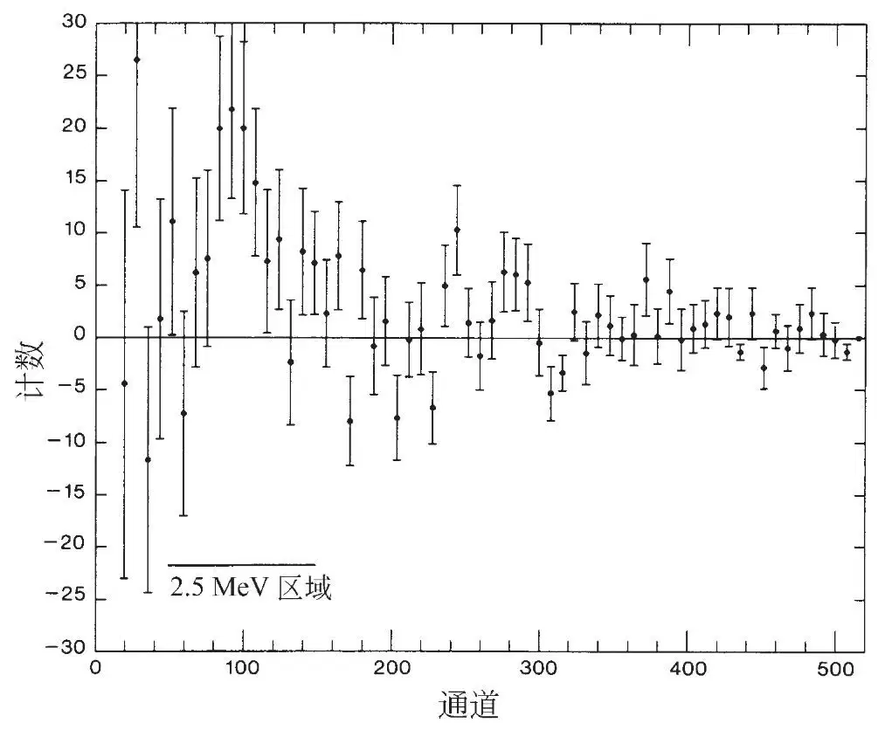
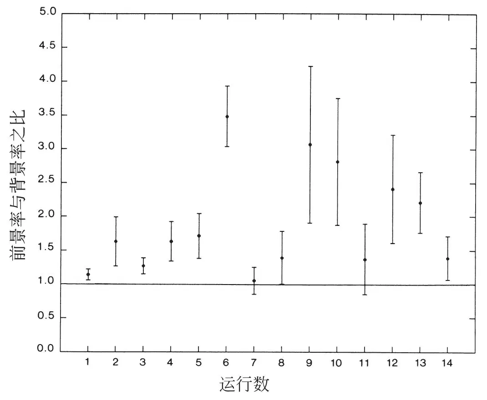
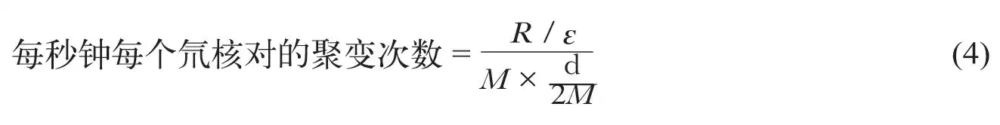

英文
英文琼斯等
编者按
1989年，犹他州的两个研究小组认为他们已经找到了证据证明，在一个简单的桌面装置中，用钯电极电解重水会引发氘原子核聚变，释放巨大的能量。这两组都把他们的结果投到了《自然》。在审稿人提出问题之后，其中的一组——犹他大学的马丁·弗莱施曼，斯坦利·庞斯和他们的学生马尔温·霍金斯——撤回了他们的论文并在别处发表。本文则是另一篇论文，由杨百翰大学的史蒂文·琼斯及其同事们所作。冷核聚变的提出颇具争议，激励着世界范围内的研究行动来重复该结果，但是一直没有得到证实，如今，由电解产生的“冷核聚变”受到人们的普遍质疑。 英文
当电流通过浸没在由氘化水和各种金属盐组成的电解质中的钯或钛电极时，我们探测到了一个微弱却意义重大的中子流。对于该现象，金属晶格中的氘核聚变或许可以做出解释。 英文
在高温的恒星内部，氢同位素的核聚变是能量产生的主要途径。而在相对寒冷的陆地环境中，原子核被电子包围着，并且彼此间的距离不会比分子库仑势垒所允许的距离更小。因此，氢气分子的核聚变率受穿过势垒的量子力学隧道效应的控制，相当于受两核间距为零的现象发生概率的控制。在氘分子中，氘核（即d）间的平衡距离为0.74 Å，d–d聚变率非常小，大约每秒钟每个氘气分子中发生10–74次聚变[1]。 英文
用一个更大的带电粒子来替代氢分子离子中的电子，聚变率会大大提高。在μ子催化聚变中，核间距会缩小约200倍（即μ子与电子质量之比），相应地核聚变率也会提升约80个数量级。μ子催化聚变已经被证实为能够在氢同位素低温混合物中迅速引起聚变反应的一个有效途径[2,3]。 英文
一个假定的比电子大几倍的准粒子会将冷核聚变率增加到易于测量到的水平，即每秒钟每个氘核对中约10–20次聚变[1]。本文报告的结果表明，在特定条件下将氢同位素原子核注入金属中，可以实现原子核间波函数相应的变化。我们已经发现了一种在既不要求高温也不使用放射性μ子的情况下实现核聚变的方法。 英文
间接证据
对地球上自然产生的3He的观测，为我们在实验室条件下研究凝聚态物质中的核聚变指明了新的方向。3He在下列聚变反应中产生：
p + d → 3He + γ(5.4 MeV)
（1）
d + d → 3He(0.82 MeV) + n(2.45 MeV)
（2a）
→ t(1.01 MeV) + p(3.02 MeV)
（2b）
氚（即t）以12.4年的半衰期衰变产生3He。与火山爆发和其他高温热流相关的固体、液体、气体中存在的已经确定的3He/4He的高比值[4-6]表明，聚变是3He的一个可能来源。 英文
为估算地球中的可能聚变率，我们假设一个简单的稳态模型，在该模型中，已知从地幔中流出的3He流为每秒钟2×1019个3He原子[7]，是由在地幔储水层（约1.4×1024 g）中均匀发生的p–d聚变引起的（波雷达，个人交流）。需要注意的是，一方面，如果地球含有“原始”3He，那么我们计算出的上述聚变率就是上限；另一方面，如果核聚变产生的3He是储藏在地幔中的（这样一来，向外流出的量就与产生率不相等），那么我们的计算值就是下限。由于每次p–d聚变产生一个3He原子且水中氘的同位素丰度约为每个质子对应1.5×10–4个氘核，我们推断出一个地球的聚变率常数λf：

这个聚变率要比孤立HD分子中的预期聚变率高出50个数量级，如果在实验室条件下重现该过程，处于这种聚变率的聚变是可以被探测到的。 英文
与地球不同，天体中的冷核聚变或许是很重要的。例如木星，它辐射出的热量大约是其从太阳那里吸收的热量的两倍。那么，发生在可能由金属氢加铁硅酸盐组成的木星核心处的冷核聚变能否为多余的热量做出解释呢？这是一个很有趣的问题。热量辐射率大约为1018 W，而该热量可以由聚变率为1030 s–1的p–d聚变产生[1]。假设有这样一个核心，其半径为4.6×109 cm，主要由氢组成，密度约为10 g·cm–3，氘核与质子之比约为10–4，且如果所有的热量全部来自聚变，那么我们推断出p–d聚变率λf必须为每秒钟每个氘核中约10–19次聚变。处于这个聚变率的催化核聚变在实验室条件下可以很容易地被探测到。 英文
关于凝聚态物质中冷核聚变的进一步证据来源于对金属中的3He和4He的研究。目前已经有一些关于金属坩埚和金属箔中的高浓度3He的报道（克雷格，波雷达，尼尔，个人交流），且与冷核聚变在原位形成相一致。特别是，马梅林等人声称在许多金属箔中观察到了分布不均匀的高浓度3He[8]。金属的电解精炼可能为冷核聚变反应（1），甚至可能包括反应（2）提供了适宜的条件。在对该现象的一些可能的解释中，作者比较赞同类似于μ子的催化作用的解释[8]。 英文
冷核聚变中子的探测
鉴于上面概述的种种考虑，在杨百翰大学进行了实验以验证冷核聚变能否在凝聚态物质中发生。我们在这里报道了室温下将氘核向金属钛或钯电极低压电解注入期间的d–d聚变。聚变反应（2a）显然受到了负电极处（及其内部）电解质中的d+和金属离子沉积的催化。灵敏的中子谱仪也明显探测到能量约为2.5 MeV的中子。实验装置如图1所示。 英文

图1．实验装置简图。在中子谱仪上放置的是电解池。 英文
杨百翰大学在过去几年中发展的中子谱仪（参考文献9及处于准备阶段的稿件）对于识别这种冷核聚变过程是非常重要的。探测器包括一个放置在直径为12.5 cm的玻璃圆筒中的液体有机闪烁器（BC–505），该圆筒内嵌着三个掺杂有Li–6的玻璃闪烁器平板。中子通过多次碰撞将能量存积在液体闪烁器中，然后生成的光输出产生能量信息。由于能量减少了，中子就会被6Li核全部吸收，并且该反应n + 6Li→t + 4He会在玻璃中引起闪烁。来自两个闪烁器的脉冲波形和振幅不相同；这两个不同的信号会被两个光电倍增管记录下来，并把倍增管的信号相加。在20 μs内来自两个倍增管的可分辨的一致信号就能够识别出一个停在探测器内的入射中子。 英文
用d–d反应产生的，能量分别为2.9 MeV和5.2 MeV的中子来校准谱仪，这些中子相对于范德格拉夫加速器氘核束流的方向在90°和0°方向射出。观测到的能谱比较宽，这意味着2.45 MeV中子应该出现在多道分析器的第45到第150道之间。通过对锎–252广谱源裂变中子计数率的多次测量，检验了探测系统的稳定性。 英文
我们已做了大量的测试证实，在这种脉冲高度范围内，中子谱仪不会对像热中子这样的其他辐射源优先响应。特别是，我们企图通过使用多种γ射线、中子源和开/关辅助设备来产生赝2.5 MeV中子“信号”的努力都失败了。在所有的信号和本底运行中，我们关闭了像范德格拉夫加速器这样的中子产生装置。 英文
许多本底运行是用含标准电极和电解质的正在运行的电解池（下文将介绍）完成的，只是将其中的D2O换成了H2O；而其他的本底运行是用新的和之前用过的包含D2O和平常电解质的无电流标准电解池完成。单个的本底运行是毫无特征的，且与图2所示的整体本底模式高度一致。在预期的2.5 MeV中子出现的能量范围内，中子计数器的本底率约为10–3 s–1。通过对比γ射线和中子源的能谱，我们已经确定，在观测到的本底事件中，大约1/4是由于γ射线的偶然重叠，3/4由周边环境中的中子引起。γ射线本底主要来源于周围材料中的放射性镭和钾。我们将环境中的中子归因于宇宙射线源。尽管典型的中子的发射谱（初生的）在接近2.5 MeV处有一个很宽的峰（参考文献10），但蒙特卡罗计算表明，由于源介质的小曼化（主要是对探测器周围的屏蔽层引起）将消除这种结构，并产生一个在0.5 MeV以上的平滑递减的本底谱，这和观测结果一致。 英文

图2．信号（实线）和本底（虚线）计数关于中子谱仪中脉冲高度（对应于中子能量）的函数。为了表述清楚，我们在每3通道中加入10个计数。 英文
预期和测到的宇宙射线产生的中子谱中的这种结构的缺失，不会受宇宙射线流中可能发生的相对微小而短暂的变化（如可观测到的与太阳耀斑相伴出现的减小）的影响。这就意味着，周边环境中子本底的变化不能对2.5 MeV处所观测到的峰作出解释，因为，正像下文解释的那样，分析是基于谱的形状而不是简单地依据比率得出的。低能宇宙射线μ子应该被具有较高原子序数的原子核迅速清除掉，以便将μ子催化的d–d聚变降到可以忽略的水平上[2,3]。考虑到体积和立体角，由检测器中碳核吸收的μ子产生中子的速率比在电解池中氧核吸收的μ子产生中子的速率要快近60倍。因此，电解池存在与否对本底的影响并不大。 英文
在寻找合适的催化剂材料的过程中，逐渐形成了下面对电解池的配方（非最优化的）。它从火山温泉中典型的盐类化合物开始，并要包含电极–金属离子。典型的电解质是一种混合物，包含约160 g D2O与多种金属盐，每种金属盐的总量约为0.1 g，其中包括：FeSO4·7H2O、NiCl2·6H2O、PdCl2、CaCO3、Li2SO4·H2O、Na2SO4·10H2O、CaH4(PO4)2·H2O、TiOSO4·H2SO4·8H2O以及极少量的AuCN。用HNO3将pH值调整到

。本文中所报道的这14次运行均从这一基础的电解质开始。 英文
最初选择钛和钯是由于它们能够大量储存氢并形成氢化物，结果发现它们还是有效的负电极。单个电极是由约1 g纯化的小球形状的“熔融”钛组成，或者由0.05 g厚度为0.025 mm的钯箔组成，也可以由5 g表面粗糙的钯组成。通常会同时使用4~8个电解池。有时我们用稀释过的酸或磨蚀材料对钯箔的表面进行清洗、粗化，之后将其回收利用。仅仅在电解发生的几分钟之后，我们就观察到钯箔上形成了氢气泡，这说明氘核已经被迅速吸收进箔里；氧气泡也在阳极迅速形成。阳极材料为金箔。直流电源对每个电解池提供了3~25 V电压和10~500 mA电流。但是，聚变产额与电压、电流密度或金属阴极的表面特征间的关联还不确定。 英文
在每个高和直径均约为4 cm的小广口瓶中盛有约20 ml的电解质溶液。如图1所示，我们将电解池放在中子计数器的上面或旁边。无疑，目前的电解池非常简单，而且远远未达到最佳效果。但对于证实在氘电解注入金属期间的冷核聚变现象而言，这种带有中子谱仪的电解池组合已经足够了。 英文
图2给出了在上述条件下得到的能谱，且并列给出本底谱（已定标）。我们取得的本底数据大约是信号数据的两倍。保守地假设来自本底的所有偏差都是统计涨落，我们用大小为0.46的因子来定标本底计数，使它与图2所示的整个能量范围内的信号计数相匹配。在45~150道之间的一个特征峰高出本底将近4个标准偏差。这意味着，我们的假设太过保守，且这个结构显示了真实的物理效应。在以大小为0.44的因子对本底进行重新定标之后，我们得到了二者的差分图（图3），重新定标旨在使本底计数在稍低于和稍高于该特征峰的区域内与信号水平相匹配。该图展示了一个集中于100道附近的强烈信号，其统计显著性几乎是5个标准偏差。高斯拟合后，有一个峰，其中心在101道附近，其标准偏差是28个通道，幅度为23.2±4.5个计数。根据光谱仪校准，该特征峰的位置和宽度对应于2.5 MeV中子的期望值。在本底之上出现的显著信号对应的能量恰为d–d聚变的中子能量（约2.5 MeV），这一事实为电解质催化电解池中存在反应率很低的核聚变提供了强有力的证据。 英文

图3．通过从信号中减去定标的本底得到的差分谱图。图中给出每8个通道的统计误差（±1σ）。 英文
测定聚变率
对列入上文讨论的综合数据中的那14次运行分别进行考查是有益的。这些运行是在1988年12月31日至1989年3月6日期间完成的。图4给出了每一次运行在2.5 MeV的能量区域内的信号计数率与本底计数率之比。在改变观察到的本底率的实验过程中，仪器中存在电子学的变化，所以我们根据信号/本底计数率的比值而非绝对计数率来绘制数据。在一组数据中（运行1到8），我们尽量使系统不受影响以避免本底率的改变，对2.5 MeV中子探测的测量率高出本底（6.2±1.3）×10–4 s–1。在这组数据中，本底率和信号率对于所有约3 MeV以上（即190道到512道之间的所有道）的能量来说都是相等的，为（1.4±0.1）×10–3 s–1。 英文
特别值得注意的是运行6，其在本底之上的统计显著性为将近5个标准偏差。我们将质量约为3 g的熔融钛小球作为负极。在电解开始一个小时之后，中子产率增加了。约8个小时之后，中子产率却急剧地降低了，这点可以从后续的运行7看出。此时，在钛电极表面出现了一个深灰色的涂层。使用电子显微镜上的微探针进行分析后发现，该表面涂层主要是铁，而氘核在阴极沉积。同样的现象，即电解进行约8个小时之后中子信号减弱，也发生在运行13及其后的运行14中。运行13和运行14用的是相同的8个电解池，并且在电解开始的几个小时之后涂层又出现在了阴极上。这些观察结果揭示了表面状况对于冷核聚变过程的重要性。由于物质会从溶液中析出，所以每次测试运行中表面状况及电解质成分的变化是可以预料到的；并且溶液的pH值在一个运行过程中也会显著地变化。这14次运行展示了对于电极材料和多种工作电流的两个选择。这些变化或许可以解释图4中信号电平的明显波动。鉴于这些运行展示了总量只有约200个的信号中子，其平均产生率约为每小时2个，优化该实验条件是非常困难的。这是未来研究的一项任务。 英文
实验观察到的约8小时之后出现的信号“中断”或许可以解释运行1和3中的信号/本底的低比值，因为信号只能持续几个小时，在一个较长的运行时间（约20小时）之后，该信号可能早就被覆盖掉了。当运行10以明显高于本底的速率开始后，作为测试，我们停止该运行，并撤去一半的电解池。正如我们所料，中子产生率逐渐减少（运行11）。在检测数据的统计显著性时，我们将运行1、3、7、11和14包括进来，尽管我们看到了造成上文提到的它们较低的信号/本底之比的系统性原因。图4中所示的运行8从磁存储器中不幸丢失，因而在图2和图3中未显示出来，但这并不影响我们的结论。 英文

图4．在脉冲高度谱的2.5 MeV能区内，每个运行的信号率与本底率之比。图中给出统计误差（±1σ）。 英文
特别是对于运行6，我们可以用以下公式估计电解过程中d–d聚变产生中子分支的产率：

其中，观测到的中子探测率R = (4.1±0.8)×10–3 s–1是基于45~150道间的信号计数减去相应的本底计数得出的；用蒙特卡罗中子–光子传输编码[11]计算出的中子探测效率（包括几何接受角）是ε = (1.0±0.3)%；而3 g钛中含M ≈ 4×1022个钛原子；基于钛晶格中几乎所有的四面体位点均被占据的假设，氘核对与金属离子之比d/2M ≈ 1，形成γ–TiD2氢化物。利用方程（4），对产生中子分支的冷核聚变率的估算值λf为每秒钟每个氘核对内约10–23次聚变。如果大多数聚变发生在表面附近，或者钛晶格远远没有被氘核占据，又或者利于聚变产生的条件间歇性出现，那么推断出的聚变率一定会大很多，大概是每秒钟每个氘核对10–20次聚变。 英文
我们注意到，这样的聚变率可以通过将分子中的氘核间距“挤压”至其正常值（0.74 Å）的一半来得到。这样的聚变率如今可以在凝聚态物质中观察到，表明可以用催化的“压核”聚变来解释[1]。一个可能的原因是，在氘化金属晶格中形成了准电子，其有效质量是一个自由电子的几倍。众所周知，氢的同位素一般积聚在金属晶格的缺陷中[12]，而局部的高浓度氢离子可能有利于压核聚变。因为在平衡氘化金属或混合物（比如甲胺–d2氘化氯化物或铵–d4氯化物）中，我们没有发现任何聚变发生的证据，所以我们推断非平衡条件是必需的。电解就是一种产生远离平衡态的条件的方法。 英文
通过改变诸如压强、温度和电磁场等外部参数，或许可以影响聚变的有效率，但是这种影响被看作是冷核聚变的另一种形式，即μ子催化聚变[13]。 英文
结论
关于冷压核聚变[1]的有关想法以及对存在于金属和地球地热区中的过量3He的观测，促使我们对电解池中的聚变进行了实验研究，该研究始于1986年5月。我们的电解质成分演变发端于地球化学的考虑，并且随着观测到结果而逐渐加以改变。虽然产生率波动很大，但聚变中子信号的出现一再被重现出来。既然我们的探索性研究已经揭露了一个小的压核聚变效应，接下来就要弄清影响聚变率的各种因素。 英文
我们的数据清楚地表明了需要远离平衡态条件的要求，并且该要求提示那些不同于电化学的方法也许同样可行。我们已经开始探索离子注入、增大压强和提高温度的作用，这些操作是为了模拟相应的地质条件。将凝聚态物质中的冷核聚变作为一种包括地质系统在内的金属氢系统的新型探测手段，以及作为一种单能中子源，或许是非常有用的。如果d–d聚变能够被催化，那么d–t聚变反应可能会更受青睐，因其核截面要大得多。尽管目前观测到的聚变率很低，但凝聚态物质中冷核聚变的发现至少为一条通往聚变能的新途径提供了可能性。 英文
（牛慧冲 翻译；李兴中 审稿）